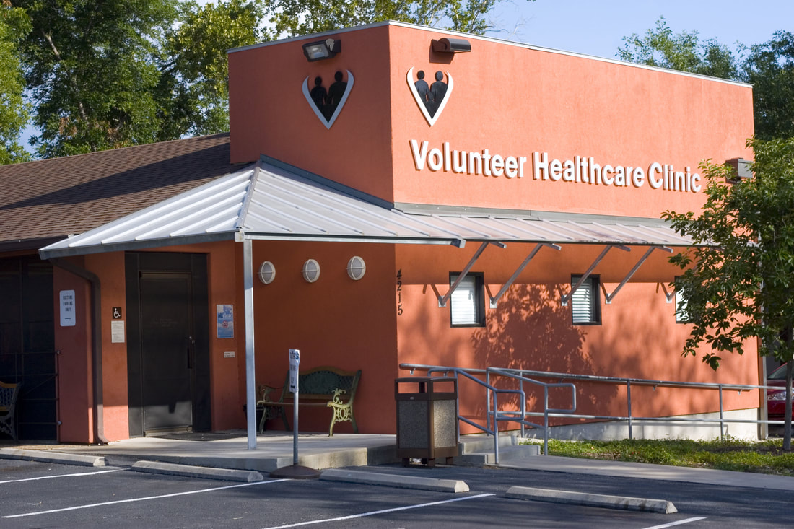
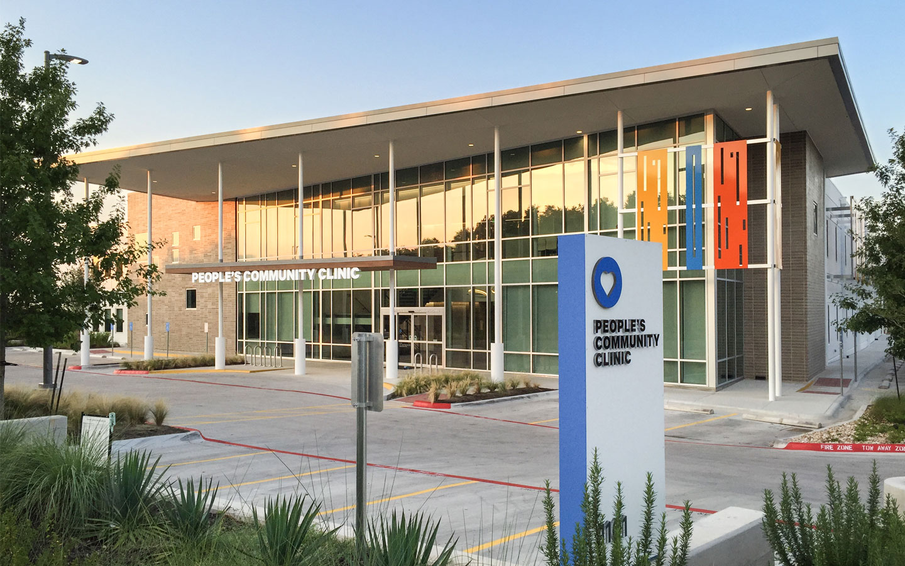

Second Chances
Austin, Texas based
Health Care
healthcare guide
hospitals in central Austin
clinics in central Austin
find support for financial aid to cover your health care
Clinics:
These clinics are friendly with a low-cost visit. If you click on the addresses, it will show you their location on a map in which you can also follow the GPS.
El Buen samaritano- Wallace Mallory Clinic
(512) 439-0700
7000 Woodhue Dr, Austin, TX 78745

Volunteer Healthcare Clinic
(512) 459-6002
4215 Medical Pkwy, Austin, TX 78756

People’s Community Clinic
(512) 478-4939
1101 Camino La Costa, Austin, TX 78752
CommUnityCare South Austin
(512) 978-8080
3706 S 1st St, Austin, TX 78704
CommUnityCare Rosewood Zaragosa (east)
(512) 978-9015
2802 Webberville Rd, Austin, TX 78702
CommUnityCare North Central
(512) 978-9300
1210 W Braker Ln, Austin, TX 78758